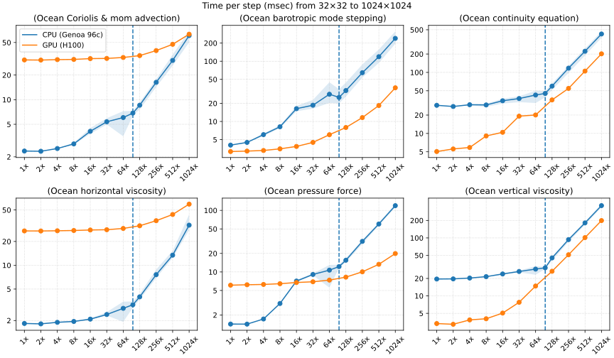

Team Ocean's 4
Porting NOAA's MOM6
ocean model to GPUs
The Team

Ed Yang
(ACCESS-NRI)

Marshall Ward
(NOAA-GFDL) |

Utheri Wagura
(NOAA-GFDL)

Jorge Galvez Vallejo
(NCI Australia / virtual) |
MOM6 Requirements
Operational forecasting models must remain intact
- Preserve the Fortran codebase
- Retain CPU performance
- Ensure bit reproducibility
Our strategy:
- Fortran intrinsics where possible (
do concurrent)
- OpenMP directives where necessary
- Manual memory management
GPU Progress

The dynamic core has been ported
Remaining Work

Proposal: ePBL
Modern ocean mixed-layer parameterization
- Columnar loop structure (
j-i-k)
- Dense subroutine call tree
- Iterative root-finding
- Tridiagonal solvers
- Thousands of lines
Representative of our most challenging solvers